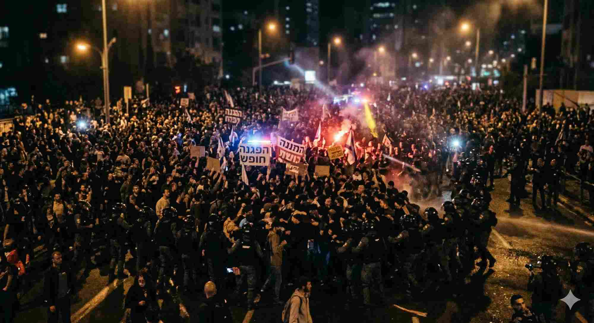
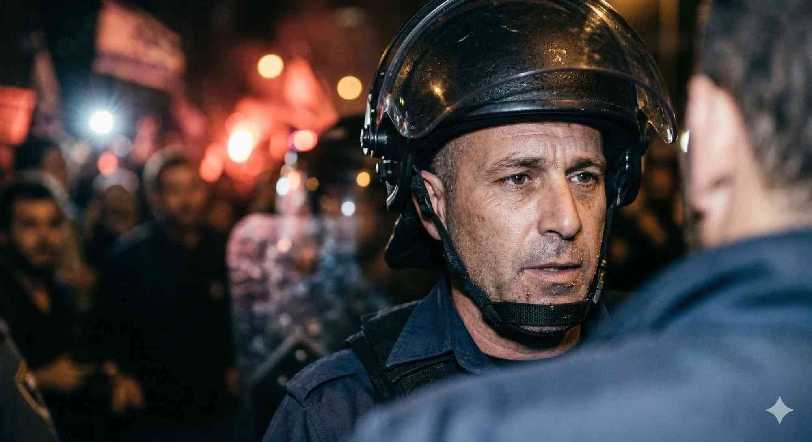
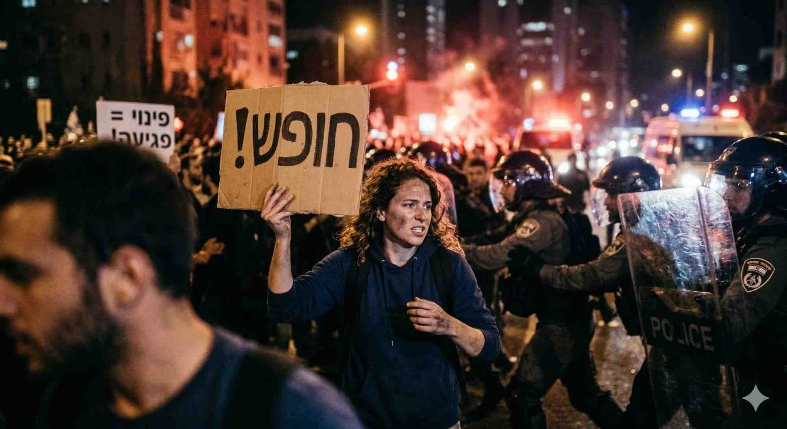

הגדרה
צילום חדשותי הוא סוג של צילום עיתונאי המלווה כתבה חדשותית ומתמקד באירועים ובבני אדם המהווים את נושא הסיקור. אינו מתוכנן מראש — ולרוב מציג רגע אחד שנלכד על-ידי הצלם מנקודת המבט הסובייקטיבית שלו.
📍 מלווה ידיעה או כתבה
🎲 לא מתוכנן מראש
⏱️ רגע אחד שנלכד
👁 נקודת מבט סובייקטיבית
🗞️ ערך חדשותי עצמאי
6 קריטריוני הערך הצילומי — לחצו לפרטים
הקשר חדשותי
התמונה משקפת את האירוע או את הדמות שהם נושא הידיעה. ללא הקשר חדשותי — אין צילום חדשותי, רק תמונה יפה. שאלת המבחן: "האם מישהו שקרא את הכותרת יבין מה בתמונה?"
מנציח את הרגע
מציג את האירוע בעת התרחשותו — לא שחזור, לא הדמיה. הצלם היה שם. ה"רגע המכריע" (Decisive Moment) הוא המושג של הצלם הנרי קרטייה-ברסון: הרגע שבו כל האלמנטים מתיישרים לסיפור שלם.
סיפוריות ופעולה
"מספר" את האירוע ללא צורך במילים. תמונה טובה מכילה: גיבור (נושא ראשי), עלילה (מה קורה), ולעיתים — רגש. הצופה מבין את הסיפור גם בלי לקרוא כיתוב.
בלעדיות
מציג מידע ייחודי שלא ניתן לראות באמצעי אחר. הצלם היה במקום שאחרים לא הגיעו אליו, או "ראה" רגע שאחרים פספסו. הבלעדיות מגדילה את ערך השוק — ולפעמים משנה היסטוריה.
השפעה רגשית
מעורר תגובה רגשית אצל הצופה — חמלה, כעס, תדהמה, שמחה. לא כל תמונה חייבת לעורר רגש שלילי; תמונה של ניצחון ספורטיבי יכולה לעורר התרגשות שתגביר את הסיקור.
איכות טכנית
צילום ברור וחד — חשיפה נכונה, מיקוד חד, קומפוזיציה שמכוונת לנושא. בעידן הסמארטפון, תמונות עם "רעש" טכני לפעמים מתפרסמות אם הערך החדשותי גבוה מאוד — אבל צילום מקצועי עדיין ניכר.
אזרח-צלם מול צלם מקצועי
Citizen Journalist
📱 אזרח-צלם
✅נמצא במקרה באירוע — נוכחות ספונטנית
✅מצלם מייד — ללא עיכוב
✅יכול להגיע למקומות שצלמים לא הוזמנו
⚠️לרוב: תמונה טכנית נמוכה, חסרת קומפוזיציה
⚠️לא מזהה "את הרגע הנכון"
⚠️ייתכן חוסר הקשר ואימות
Photojournalist
📷 צלם מקצועי
✅מגיע מוכן — ציוד, ידע, הכנה
✅מזהה ו"מחכה לרגע" הנכון
✅קומפוזיציה, תאורה, מיקוד מכוון
✅עורך ומסנן — שולח את הטובה ביותר
✅אחריות עיתונאית ואתיקה מקצועית
דווקא בעידן שבו לכל אזרח יש מצלמה, ערכו של הצילום המקצועי עולה: היכולת להעביר מידע מעניין, מרגש וברמה גבוהה — לא ניתן לשכפל בסמארטפון.
📸 דמו — "הרגע המכריע": מה הייתם בוחרים?
תרחיש: הפגנה עם פינוי מפגינים. הצלם צילם 4 תמונות. לחצו על זו שלדעתכם הכי ראויה לפרסום:
✓

א׳ — קהל מרחוק, לילה ✔ בחר
✓

ב׳ — פנים של שוטר ✔ בחר
✓

ג׳ — מפגינה עם שלט ✔ בחר
✓

ד׳ — מגע ידיים בפינוי ✔ בחר
💭 מה זה "הרגע המכריע" של קרטייה-ברסון?▾
הצלם הצרפתי אנרי קרטייה-ברסון (1908–2004) טבע את המושג The Decisive Moment — הרגע שבו צורה ותוכן מתאחדים לביטוי מושלם. לא הרגע הדרמטי ביותר, אלא הרגע שבו כל האלמנטים הויזואליים "מספרים" יחד את הסיפור. צלמים מאמנים שנים לזהות רגע זה.
💭 האם מותר לצלם לעצור מפגינה נופלת ולעזור לה?▾
שאלה אתית קלאסית בצילום עיתונאי. גישה א': הצלם הוא עד בלבד — אין להתערב. גישה ב': אנושיות קודמת לסיפור — ניתן לעזור ולהמשיך. אין תשובה אחת: כל צלם מחליט לפי מצפונו, וכל עיתון עשוי לנחות בצורה שונה.
⭐ שחקו — דרגו את הצילום לפי הקריטריונים
לכל תמונה — נתנו דירוג (1–5 כוכבים) ובחרו אילו קריטריוני ערך היא ממלאת:
בחרו תמונה מהרשימה...
דירוג שלי:
⭐
⭐
⭐
⭐
⭐
קריטריונים שממולאים:
🧠 בחן את עצמך
מדוע דווקא בעידן הסמארטפון עולה ערכו של הצילום המקצועי?
מה ה"נקודת המבט הסובייקטיבית" של הצלם?
שניים מהקריטריונים הכי קשים למלא במקביל הם: